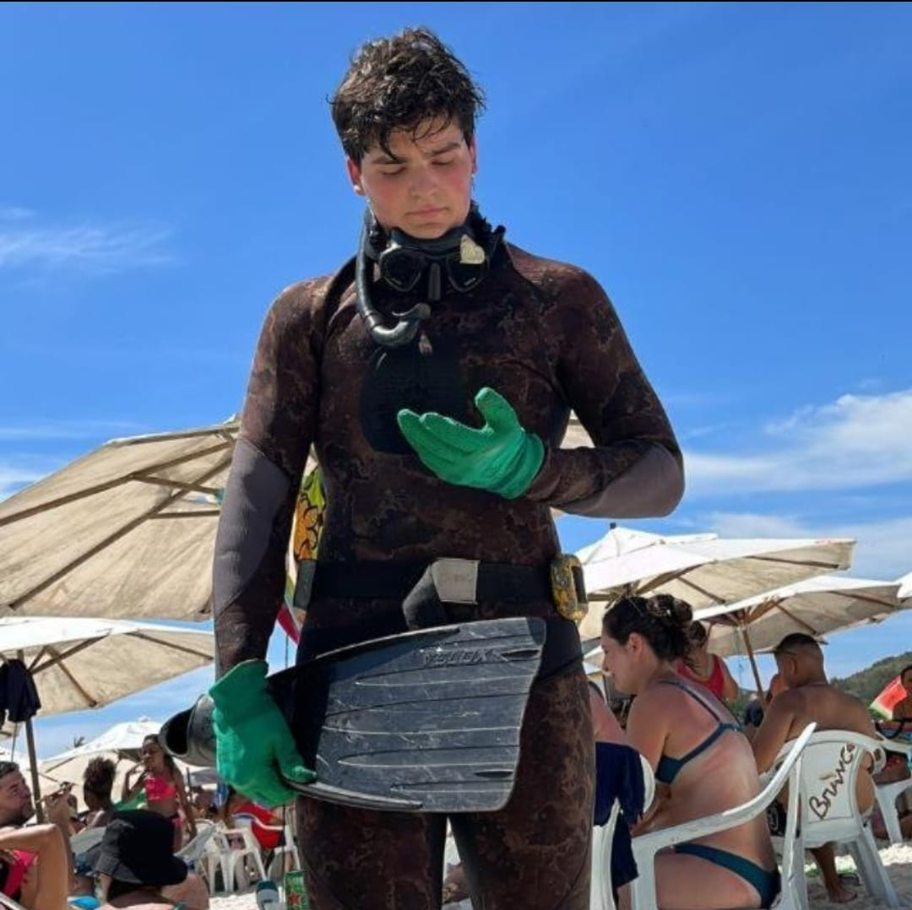

Menu Principal
Projeto
Meu curriculo
Novidades
Página de Contato

Meu nome é Felipe Valentim Gabry
Tenho 18 anos e nasci dia 08/03/2006
Gosto muito do mar e de jogar qualquer tipo de jogo
Sou um grande adorador do CiOpEsp